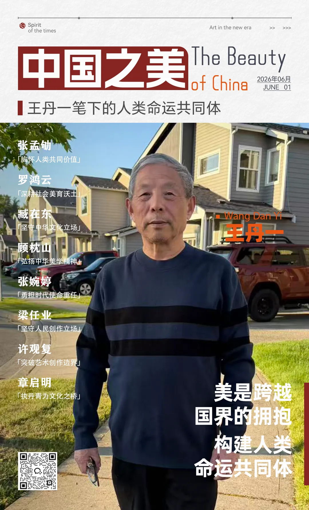
Preface
当代中国正推进中国式现代化，这不仅是物质跃升，更是精神文明重塑与中华民族现代文明筑基。在此背景下，艺术肩负联通文明对话、凝聚人类共识、构建人类命运共同体的使命。习近平总书记指出，要推动中华优秀传统文化"创造性转化、创新性发展"，为艺术创作指明方向：艺术要根植传统，与世界共鸣。
当代艺术家自觉践行使命，追求大美之境，作品蕴含生命关怀。《中国之美》呈现的作品延续此精神，构成"艺术家笔下的人类命运共同体"的注脚。其艺术价值在于续写升华中国艺术"美美与共"的精神谱系，艺术家以"共同体"为题眼，摒弃隔阂，构建精神图景，多元开阔的"美"体现文明互鉴与价值共鸣。
这些作品超越书斋雅趣，成为联通世界的"时代宣言"，核心是构建了可普遍感知共情的情感结构，激发"情感公约数"，表达对"和而不同"等核心理念的向往。置于时代大背景下，这些创作是传统文化"两创"与文明交流互鉴的生动案例。将《中国之美》作为时代读本研读推广，是以美培元、以文铸魂的公共文化实践，我们需更多艺术典范，共筑文明新形态。

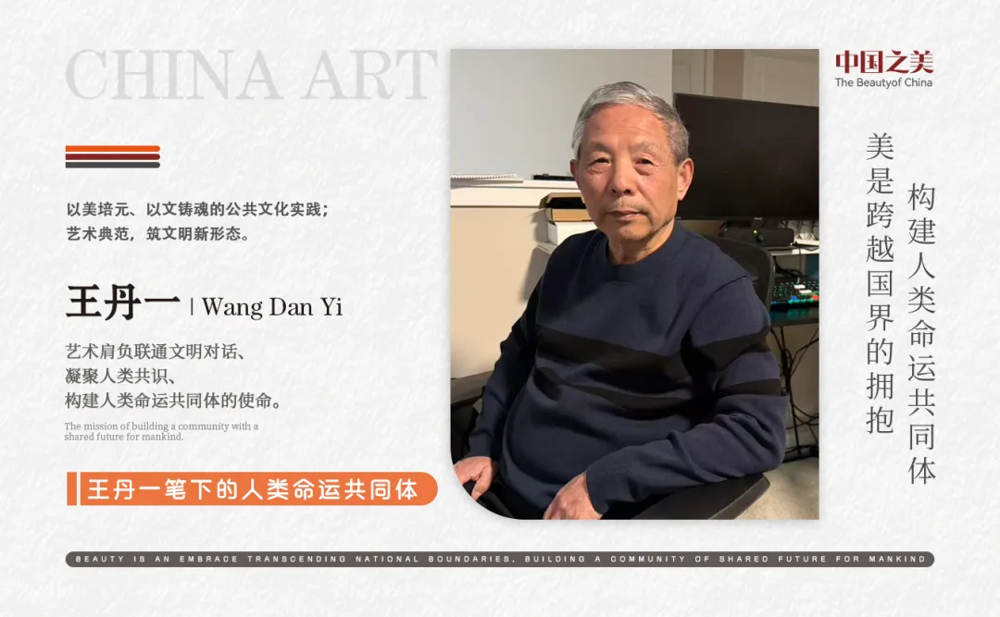
Artist Profile
王志，艺名王丹一、王也，1957年出生。安徽亳州人，祖籍安徽太和。吉林大学古籍研究所文献专业硕士。他长期定居于北京。现任京中书画院院长、中国美术家协会会员、中国壁画学会会员、一级美术师。他涉猎的领域有：艺术理论、中国画、岩彩画、木刻版画、插图等，特别是在油画创作方面独树一帜，在社会上有极其广泛的影响。
Selected Exhibitions
-
2021
《禹诛防风氏》《开天辟地——中华创世神话文艺创作工程》
-
2019
《海的女儿》入选第二届中国插图艺术展（中国美术家协会主办）
-
2019
《月光吟》入选悲鸿精神——第三届全国中国画作品展（中国美术家协会主办）
-
2019
《月光曲》入选第十三届全国美术作品展览壁画展区（中国美术家协会主办）
-
2019
《为了忘却的记忆》入选第二十三届全国版画作品展（中国美术家协会主办）
-
2019
《沧浪烟雨卧暖阳》入选我爱你，祖国——庆祝新中国成立70周年第二届新文艺群体书画家优秀作品展（中国文联主办）
-
2018
《升庵诗话》入选升庵诗画——全国中国画作品展（中国美术家协会主办）
-
2018
《并非遥远的记忆》入选纪念何香凝先生诞辰140周年暨首届"香凝如故"全国美术作品展（中国美术家协会主办）
-
2017
《相约蔚蓝》入选第六届中国·观澜国际版画双年展（中国美术家协会主办）

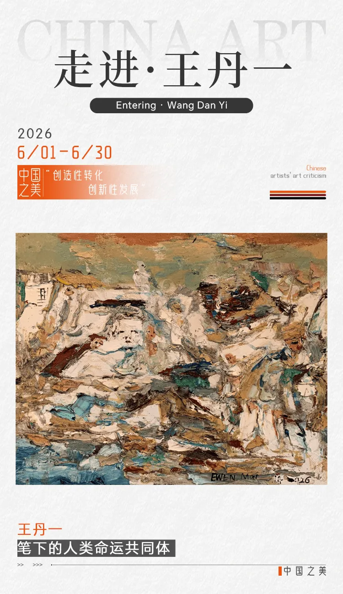
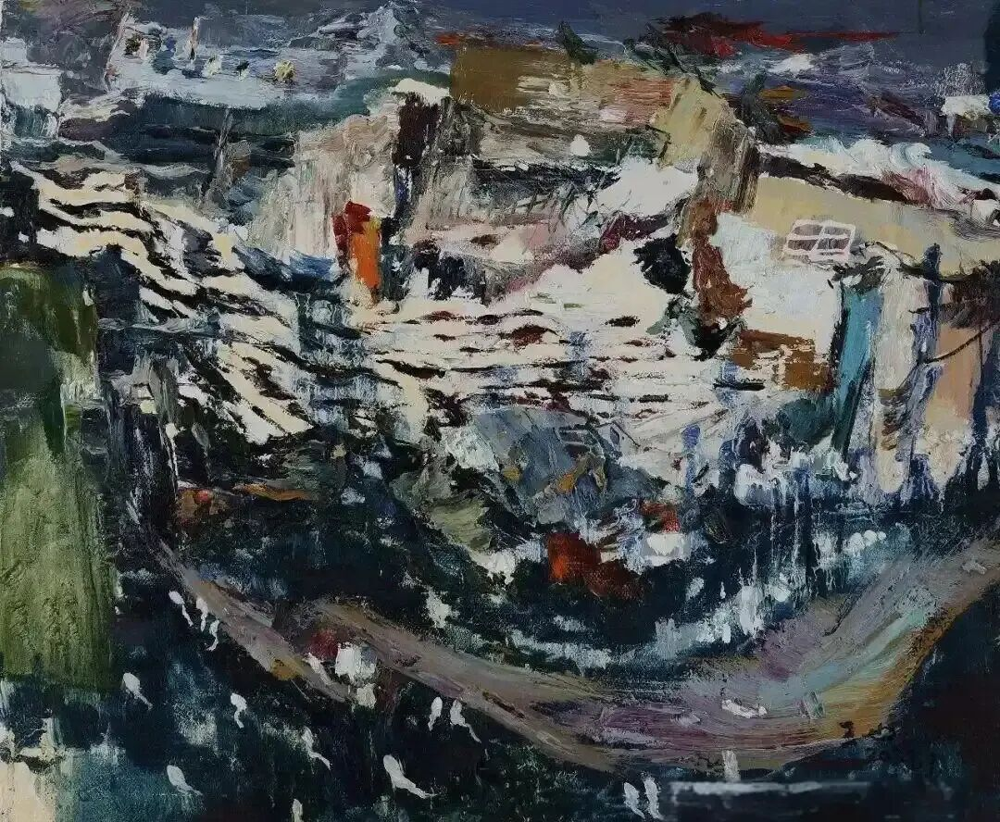
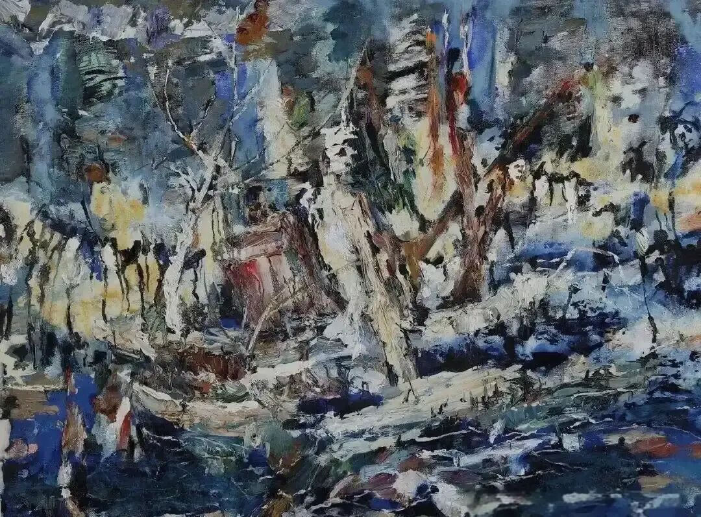
I
文明跨越山海，艺术直抵人心
文明跨越山海，艺术直抵人心。王丹一立足东方文化根脉，放眼人类共同命运，用多元艺术语言搭建文明对话的桥梁，让不同文化背景的观者感受共情、看见共生。作为京中书画院院长、一级美术师，他不局限于单一画种，油画、中国画、版画、插图融会贯通，以开放视野打破艺术壁垒，践行文明互鉴的创作理念。《禹诛防风氏》入选中华创世神话工程，将上古先民敬天尚德、和合共生的集体记忆，升华为人类共通的精神向往，折射对和平、正义、生态和谐的共同追求。
深耕艺术表达，王丹一始终坚持中西融合、形神兼备。他将西方油画的光影质感、色彩层次，与东方艺术的空灵意境、写意精神相融，形成独树一帜的视觉语言。《海的女儿》以细腻笔触刻画生命温情，弱化文化差异、强化人性共鸣，传递对生命尊严与温暖情感的珍视，契合人类命运共同体的价值内核。凭借吉林大学古籍研究所文献专业硕士的学术积淀，他深挖中华文脉中"天下大同"的思想资源，把文献考据、文化溯源融入创作，为文明对话提供扎实的学术支撑，让艺术成为凝聚共识、守望相助的精神纽带。
作品多次入选国家级大展，王丹一以艺术实践推动中华文化走出去，让世界透过色彩与笔触理解中国、尊重差异、拥抱多元。他的创作证明，扎根民族土壤、心系人类共同命运的艺术，才能跨越国界、直抵心灵，在文明交融中绽放永恒光芒。
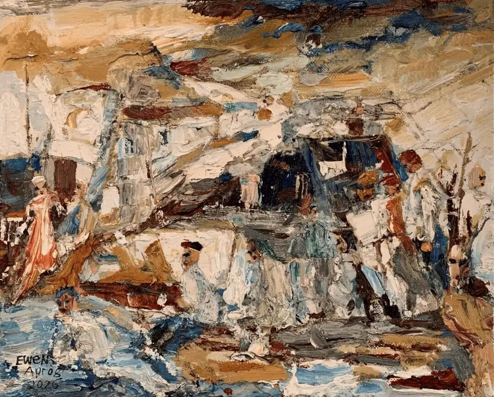
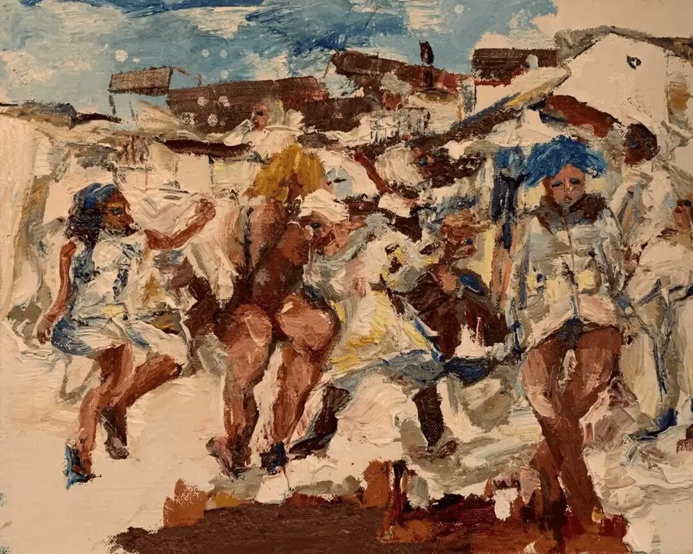
II
美育滋养心灵，艺术温润时代
美育滋养心灵，艺术温润时代。王丹一始终秉持美育初心，以兼具审美高度与人文温度的作品，扎根生活、浸润传统、回应时代，让艺术走出殿堂、走进大众，为社会美育注入持久活力。作为中国美术家协会会员，他坚持艺术服务社会、润泽人心，创作题材贴近时代脉搏、贴近大众情感，兼顾艺术专业性与大众接受度，成为社会美育的生动范本。
王丹一的作品兼具审美价值与精神厚度，引导大众在欣赏中感知美、理解美、创造美。《月光吟》《月光曲》以诗意光影勾勒静谧意境，将传统文人画的清雅风骨与现代审美相融，以朦胧月色传递东方美学的含蓄空灵，唤起大众对诗意生活的向往；《为了忘却的记忆》以版画沉郁厚重的质感回望历史，铭记奋斗与牺牲，传递敬畏历史、珍爱和平的价值导向，发挥艺术以史育人、以美铸魂的深层作用。他跨界版画、壁画、插图等领域，拓展艺术表达边界，适配不同群体审美需求，拓宽社会美育覆盖面。
立足京中书画院平台，王丹一积极推广传统艺术与现代创作理念，投身美育普及、公益展览、基层艺术活动，走进校园、社区、乡村，让艺术惠及更多群众。他坚持创作不追小众、不逐浮华，始终以温润笔触传递真挚情感，让大众在作品中看见生活、感受美好、提升素养，彰显新时代艺术家的社会责任与美育担当，为培育时代审美、涵养文明风尚贡献艺术力量。
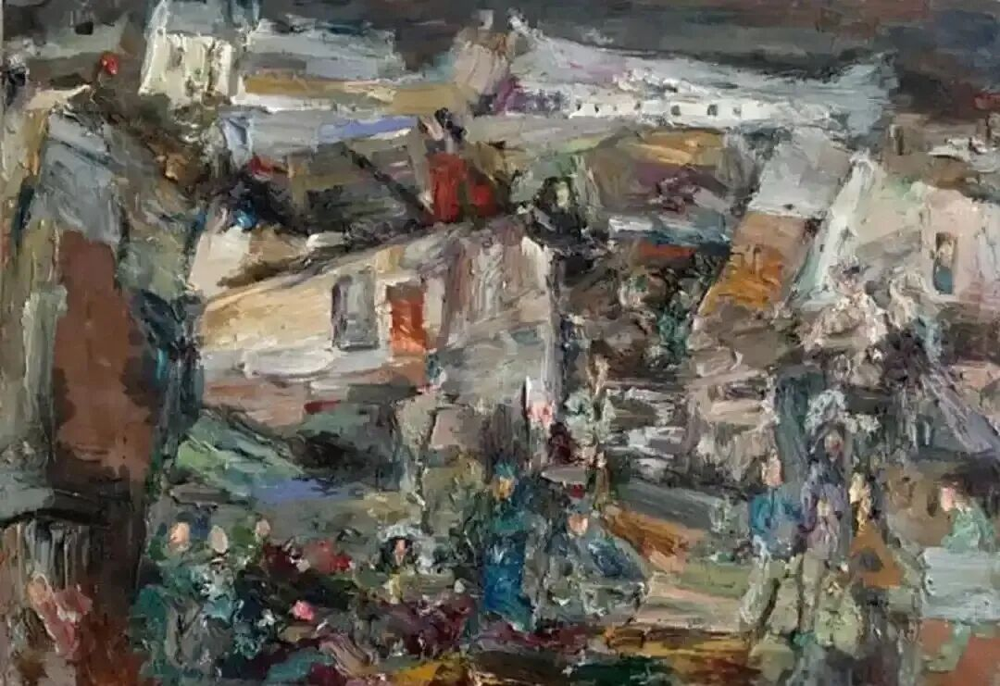
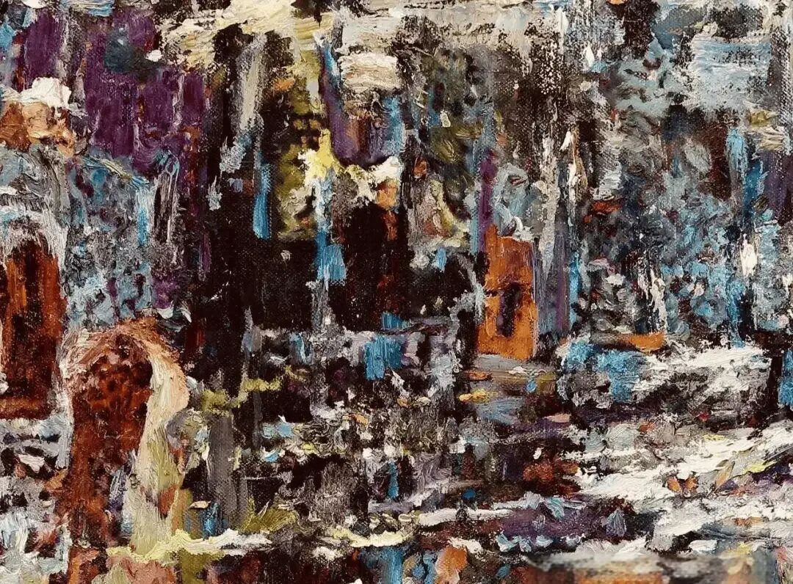
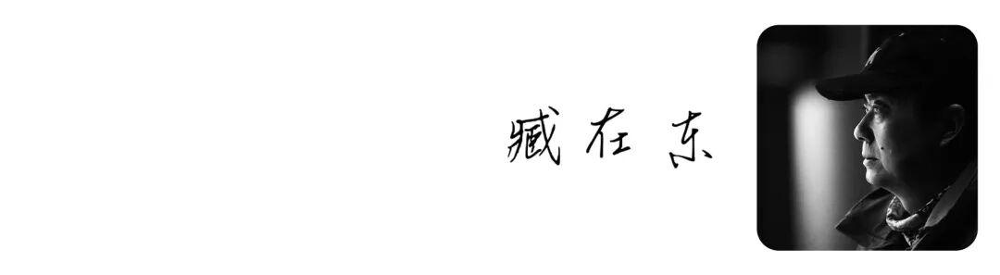
III
文脉绵延不绝，自信根植传统
文脉绵延不绝，自信根植传统。王丹一深植中华优秀传统文化沃土，以坚守为根、创新为翼，赓续千年文脉、彰显文化底气，在传承中弘扬文化精髓、在创作中彰显民族风骨，成为坚守中华文化立场、助力文化强国建设的艺术标杆。祖籍安徽太和、长期定居北京的成长经历，让他兼具中原文化的厚重底蕴与首都文化的开阔视野，创作始终扎根民族文化土壤，保持鲜明的中国气派与民族特质。
王丹一对传统文化的坚守，体现在对文脉的深度赓续与精神传承上。他深耕古籍文献、神话传说、传统美学，从中华文脉中汲取创作养分，拒绝盲目跟风西方潮流，始终以中华文化为创作原点。《沧浪烟雨卧暖阳》取传统山水意境之神韵，借烟雨暖阳勾勒山水情怀，传递人与自然和谐共生的东方智慧，笔墨间流淌中式美学的含蓄悠远；《升庵诗话》立足古典文献典籍，将诗画相融的传统美学转化为现代艺术表达，让古籍文字的文化内涵可视化、具象化，让传统文脉在当代艺术创作中焕发新生。
守正不忘创新，王丹一在坚守文化立场的同时，推动传统艺术创造性转化、创新性发展。他将油画技法与东方意境相融，让传统题材焕发时代活力；跨界多艺术门类，让文化表达更多元立体。这种"守正创新"的实践，既守护了文化根脉，又契合时代审美需求，推动中华优秀传统文化活起来、传下去，为文化强国建设筑牢艺术根基，彰显新时代艺术家守护文脉、弘扬民族精神的使命担当。
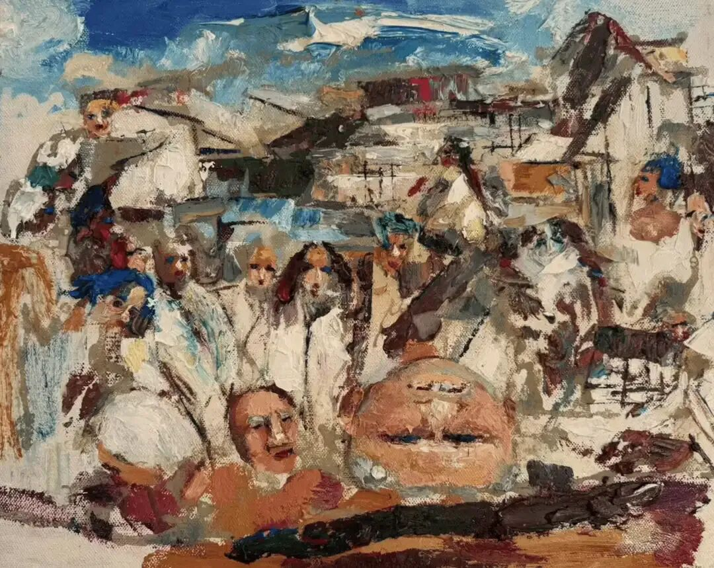
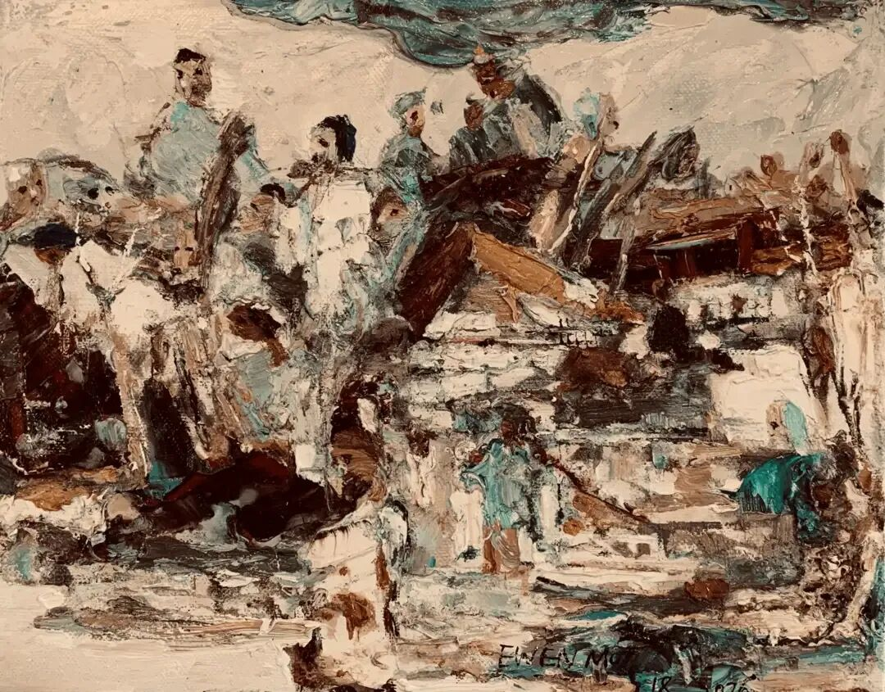
IV
中华美学精神
中华美学源远流长，精神薪火代代相传。王丹一深耕中华美学精神内核，以油画为核心载体，融合传统美学意境与现代艺术语言，诠释"意境为上、形神兼备""情景交融、物我合一"的东方审美精髓，让中华美学在新时代焕发独特光彩，彰显坚定的文化自信与深厚的文化底蕴。他深谙中华美学的核心要义，创作不刻意追求写实复刻，而是以色彩为媒、以意境为魂，传递东方美学的温润、含蓄、深邃。
王丹一的作品，处处浸润中华美学的独特韵味。色彩表达上，摒弃浓艳堆砌，偏爱清雅素净色调，《月光吟》以朦胧光影营造诗意氛围，月色朦胧、意境悠远，契合传统美学"含蓄内敛、淡雅空灵"的审美追求，借月色抒发静谧心境，实现情景交融、物我合一；构图布局上，汲取中国画"留白"智慧，虚实相生、疏密有致，画面简洁而意蕴丰富，给观者留下无限想象空间，尽显中式美学的空灵之美；意境营造上，注重托物言志、寓理于情，将个人情感、自然万物、文化哲思相融，让作品既有视觉美感，又有精神深度，传递中华美学的独特价值。
凭借文献学专业素养，王丹一系统梳理中华美学脉络，将传统美学思想与现代创作理论相融，赋予中华美学精神新的时代内涵。跨界版画、壁画创作时，他又将传统雕刻美学、壁画叙事逻辑融入其中，实现中华美学精神的多元表达。作品多次入选国家级展览，以鲜明的东方美学特质，让世界读懂中国审美、感受中华文化魅力，筑牢文化自信的美学根基，为中华美学的当代传承与发展提供宝贵借鉴。
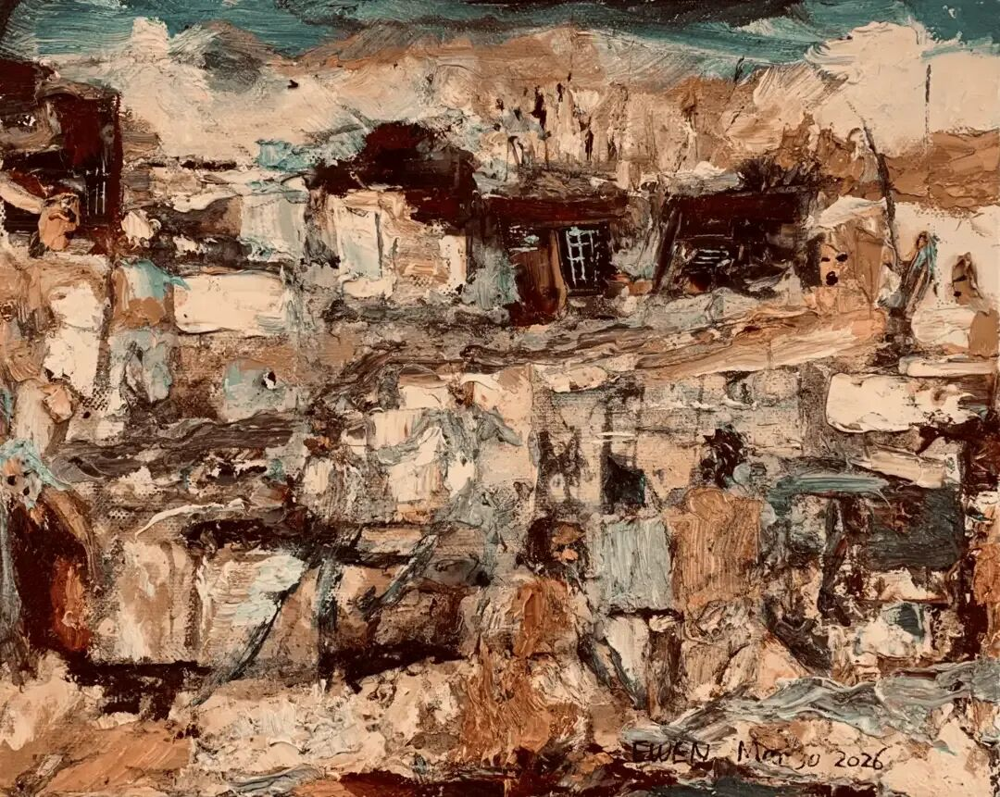
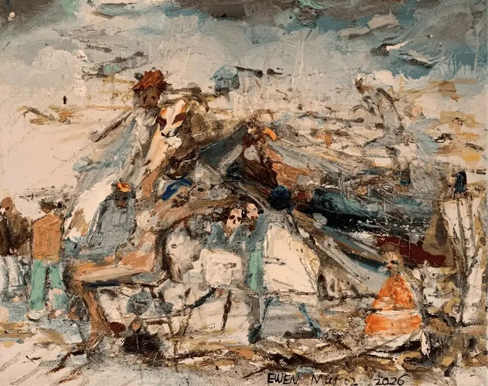
V
时代召唤担当，笔墨映照初心
时代召唤担当，笔墨映照初心。王丹一以高度的时代自觉与使命担当，将个人艺术追求融入民族发展洪流，创作紧扣时代主题、镌刻时代印记、彰显民族精神，用画笔记录时代变迁、讴歌民族风骨、凝聚奋进力量，成为振奋民族精神、传递时代强音的重要力量。他始终与时代同频共振、与民族命运相连，从历史记忆到时代风貌，从文化传承到精神弘扬，每一幅作品都饱含家国情怀、彰显时代担当。
王丹一的作品，始终饱含对民族历史的敬畏、对时代发展的赞颂、对民族精神的弘扬。《并非遥远的记忆》回望民族奋斗历程，铭记先辈牺牲奉献，画面厚重深沉、情感真挚浓烈，传递铭记历史、砥砺前行的精神力量，唤醒民族记忆、凝聚奋进共识；《沧浪烟雨卧暖阳》献礼新中国成立70周年，以温婉雅致的画面、悠远宁静的意境，抒发对祖国的深情热爱与对美好生活的深切向往，彰显新时代的蓬勃生机；《禹诛防风氏》深挖中华创世神话，展现中华民族敬畏自然、崇德向善、自强不息的精神基因，彰显民族文化的深厚底蕴与精神高度，凝聚民族认同、振奋民族精神。
作为京中书画院院长，王丹一引领艺术创作方向，团结文艺工作者深耕时代主题、弘扬民族精神，推动艺术创作与时代发展同频共振。他以多元技法突破创作局限，油画的厚重、中国画的灵动、版画的刚毅相互交融，既展现民族文化的博大精深，又彰显新时代的创新活力。他的实践证明，新时代艺术家唯有心系民族命运、肩负时代使命，才能创作出有筋骨、有温度、有力量的作品，用艺术振奋民族精神、凝聚复兴力量，书写无愧于时代、无愧于民族的艺术篇章。
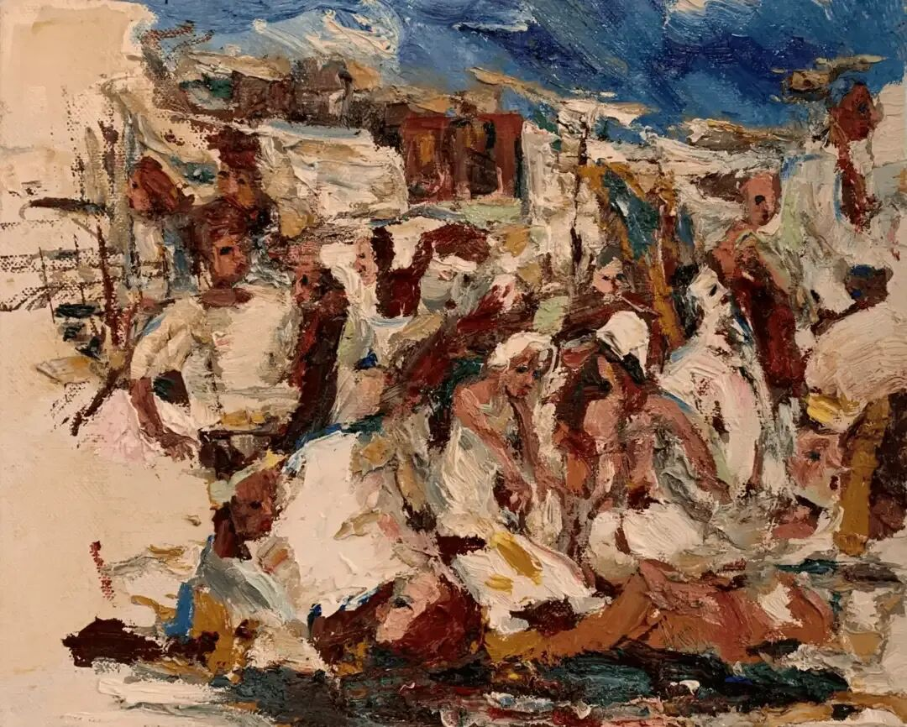
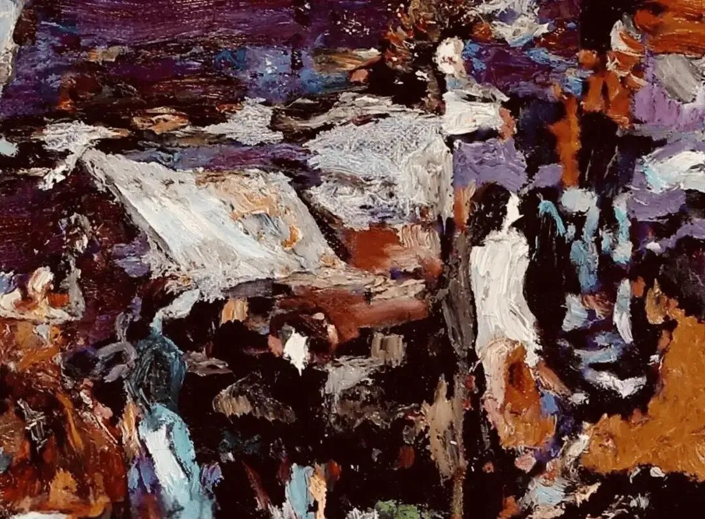
VI
艺术源于人民，创作服务人民
艺术源于人民，创作服务人民。王丹一始终坚守人民立场，秉持"艺术为人民"的初心使命，扎根人民生活、贴近群众情感、回应大众期盼，创作源于生活、服务人民、饱含温情，用有温度、有情怀、有共鸣的作品滋养人民精神世界、满足人民审美需求，生动诠释人民艺术家的初心本色与为民情怀。他始终摒弃脱离大众的小众化、精英化创作倾向，坚持以人民为中心的创作导向，让艺术回归人民、扎根人民、滋养人民。
王丹一的创作题材，始终聚焦人民生活与情感共鸣，描绘人民的生活之美、情感之美、精神之美。《海的女儿》聚焦平凡生命，传递对个体价值、生命尊严的温情关怀，笔触细腻、情感真挚，弱化宏大叙事、强化人性温度，引发大众情感共鸣；《为了忘却的记忆》铭记人民的奋斗历程与牺牲奉献，致敬平凡英雄、传承奋斗精神，画面沉郁厚重、情感深沉浓烈，唤起大众对历史的敬畏、对先辈的缅怀；《相约蔚蓝》聚焦美好生活，抒发对蓝天碧海、幸福生活的向往追求，画面清新明快、意境开阔明朗，贴合人民对美好生活的深切期盼，传递积极向上的生活态度。
积极投身艺术惠民与美育普及，王丹一主动参与公益展览、基层美育、社区艺术活动，走进校园、社区、乡村，让艺术走出殿堂、惠及更多群众，践行艺术服务人民的根本宗旨。作为中国壁画学会会员，他的壁画创作立足公共空间、服务大众审美，让艺术融入城市生活、滋养人民精神世界。他始终以人民的审美为导向、以人民的情感为内核，用质朴笔触、真挚情感传递温暖、凝聚人心，彰显人民艺术家的为民情怀与责任担当，为新时代文艺工作者坚守人民立场、践行艺术使命树立典范。
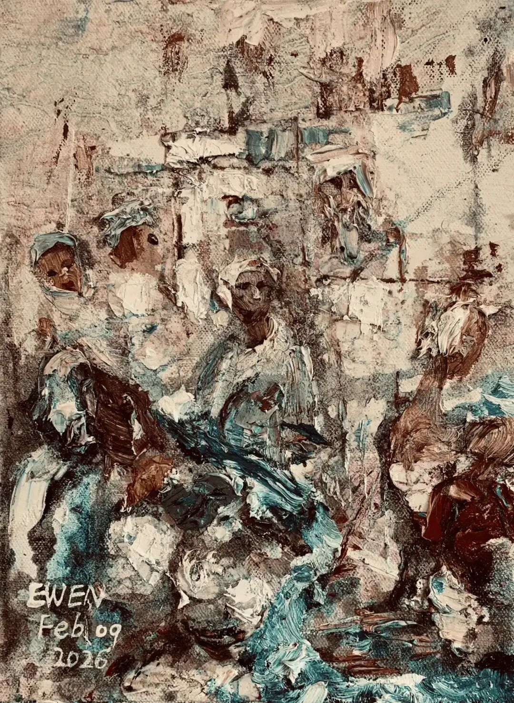
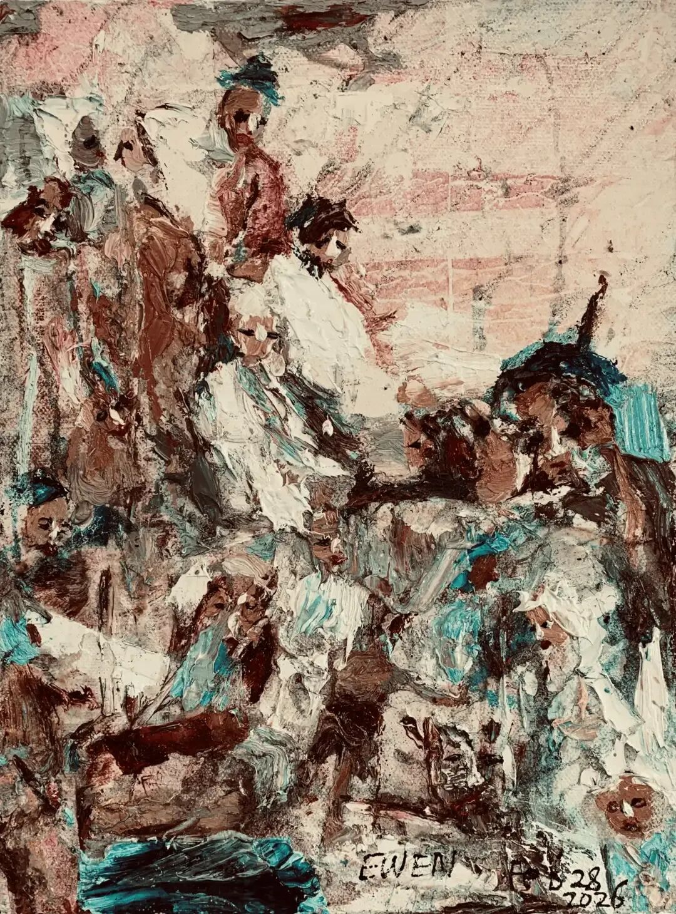
VII
守正方能固本，创新方可致远
守正方能固本，创新方可致远。王丹一作为当代艺术领域守正创新的杰出代表，以深厚传统底蕴为根基、以突破探索精神为动力，打破艺术门类、文化地域、创作形式的多重边界，实现艺术创作的多元突破与深度拓展，为当代艺术创新发展树立典范、提供宝贵借鉴。他对传统的"守正"，不是固步自封、墨守成规，而是深耕精髓、坚定根基；对创作的"创新"，不是盲目颠覆、脱离根本，而是立足传统、勇于探索。
在艺术门类融合上，王丹一打破单一画种的局限，跨界油画、中国画、岩彩画、木刻版画、插图等多个领域，实现艺术语言的多元融合、相互赋能。他精通传统书画的笔墨意境、线条韵味，深谙油画的光影明暗、色彩层次，擅长版画的肌理质感、叙事张力，不同门类的艺术特质在他笔下相互交融、相得益彰，形成独树一帜、辨识度极高的艺术风格。技法创新层面，他大胆将西方油画的明暗对比、色彩叠加技法，与东方艺术的写意留白、意境营造智慧相融，让传统艺术焕发现代活力，让西方艺术语言承载东方文化内涵，实现技法层面的深度突破与创新。
题材与表达拓展上，王丹一不断拓宽创作边界、丰富创作维度：题材从传统山水、神话传说、古典典籍，延伸至时代风貌、人文关怀、生命思考、生态理念，兼具历史厚度、文化深度与时代温度；表达从平面绘画，拓展至壁画、版画、插图、艺术理论研究等多元形式，适配不同场景、不同受众的审美需求。他的创新始终扎根传统文脉、坚守艺术本真，在传承中突破、在创新中坚守，既避免了脱离传统的盲目创新，又摆脱了固守传统的停滞不前，成为当代艺术守正创新、突破边界、开拓新境的典范，为新时代艺术创作提供重要启示。
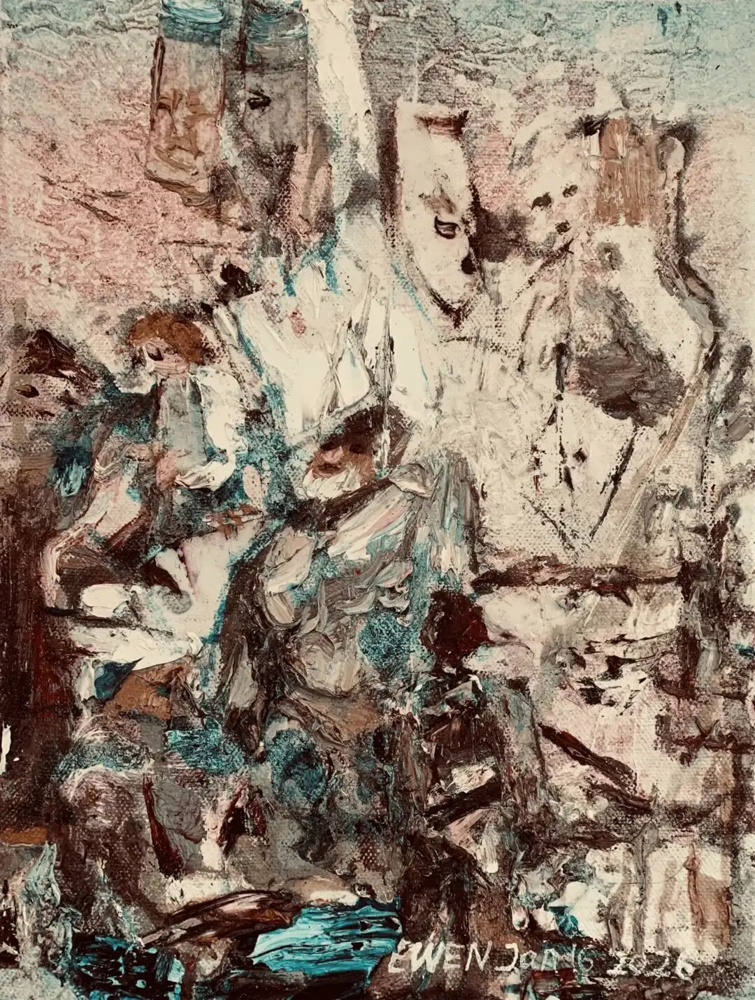
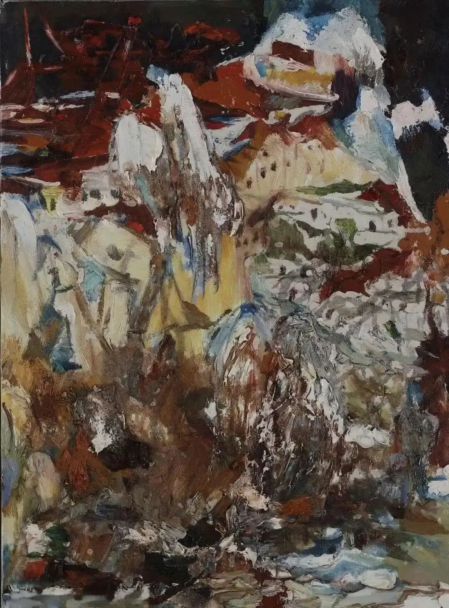
VIII
丹青为媒，文化为桥
丹青为媒，文化为桥；讲好中国故事，展现中国形象。王丹一立足中国大地、扎根中华文化、心怀世界视野，以丹青笔墨为媒介、以文化交流为使命，用艺术语言讲述中国故事、传递中国声音、展现中国形象，成为向世界展现可信、可爱、可敬中国的典范。他的作品饱含鲜明中国元素、深厚文化底蕴、独特民族风骨，既是中华文化的生动载体，也是世界读懂中国、理解中国、认同中国的重要窗口。
王丹一的作品，从不同维度、不同层面勾勒中国形象、传递中国精神、彰显中国气质。《禹诛防风氏》深挖中华创世神话，讲述中国上古文明的智慧结晶与精神内核，展现中华民族敬畏自然、崇德向善、自强不息、和合共生的文化基因，彰显历史厚重、底蕴深厚、精神昂扬的可信中国形象；《沧浪烟雨卧暖阳》呈现中国传统山水意境，传递人与自然和谐共生的东方智慧，画面温婉雅致、意境悠远宁静、气韵生动鲜活，尽显东方美学魅力与生活温情，展现温润包容、诗意盎然、充满魅力的可爱中国形象；《并非遥远的记忆》回望民族奋斗征程，铭记先辈牺牲奉献、砥砺前行的奋斗精神，画面厚重深沉、情感真挚浓烈、精神昂扬向上，彰显坚韧不拔、不畏艰难、自强不息的可敬中国形象。
王丹一以油画这一国际通用艺术语言，承载中国文化内涵、传递中国价值理念，打破文化隔阂与语言障碍，让世界透过色彩与笔触读懂中国文化、感受中国魅力、理解中国精神。作品多次入选国家级重要展览，以艺术的方式传递中国价值观、展现中国精神、弘扬中华文化，助力中华文化走出去、提升国际影响力。从学术研究到创作实践，从传统传承到现代表达，他始终以艺术为桥，连接中国与世界，讲述有温度、有深度、有厚度的中国故事，让世界更好地了解中国、理解中国、认同中国，为新时代讲好中国故事、传播好中国声音贡献坚实艺术力量。
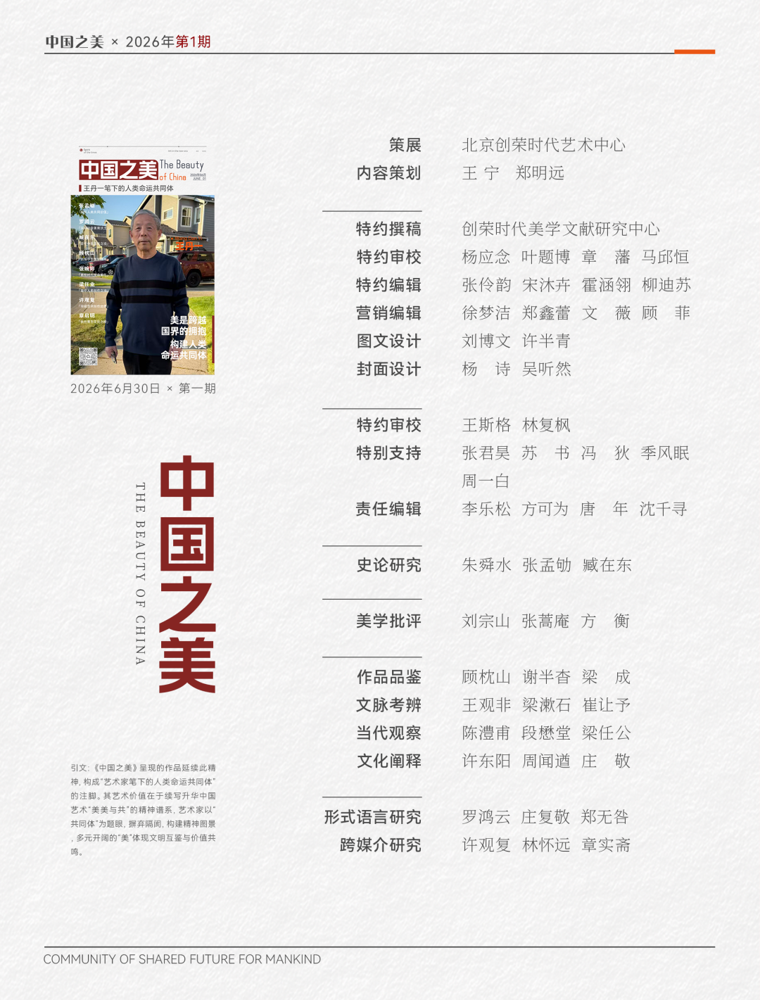